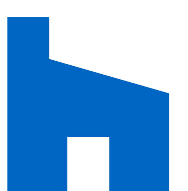
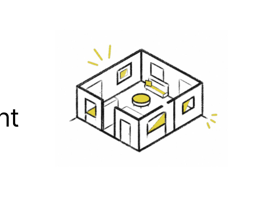
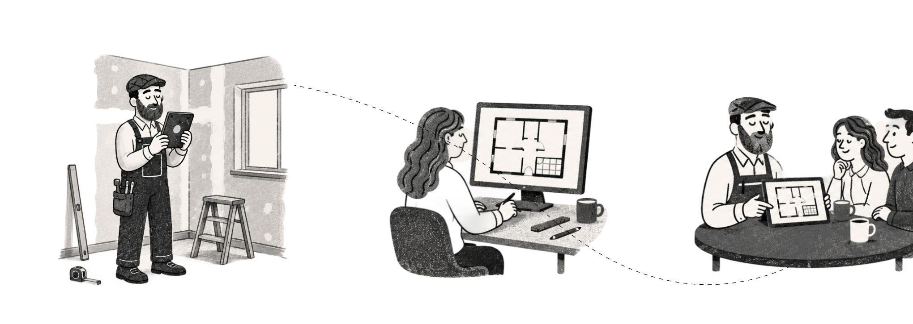
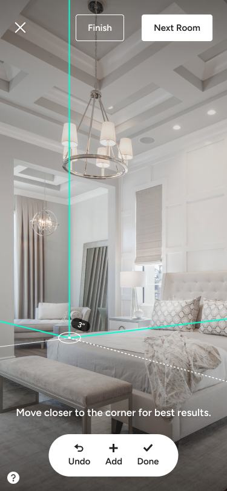
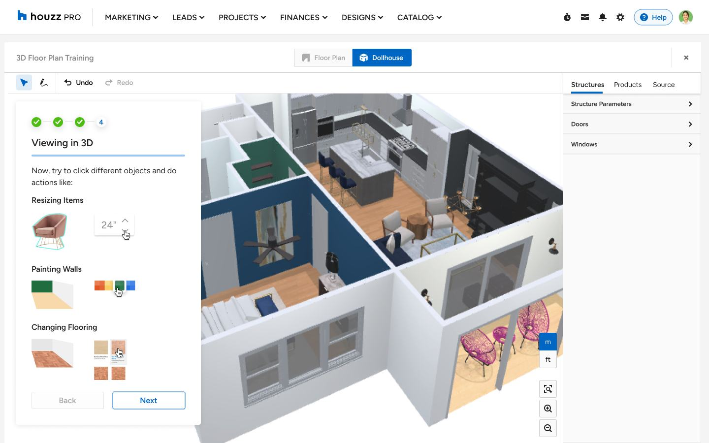
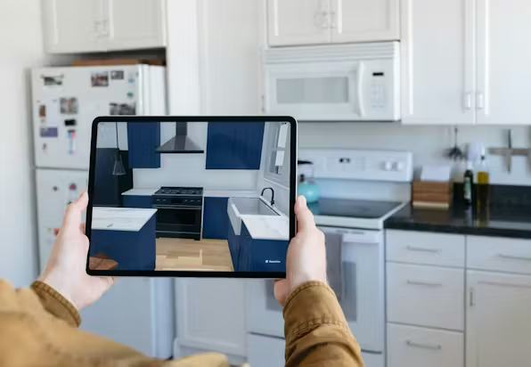

3D Floor Plans helps renovation professionals capture real spaces, refine floor plans, and present proposals to clients.
Houzz connects homeowners with renovation professionals, products, and design inspiration.
Houzz Pro is the professional workspace within Houzz, helping contractors, designers, and architects manage renovation projects from lead to completion.
Within Houzz Pro, 3D Floor Plans helps pros turn real spaces into plans they can refine, share, and present to clients.


3D Floor Plans supported renovation professionals across site visits, planning, and client conversations. Contractors made up the largest share of users, followed by designers and architects.
Contractors 60%
Measure spaces, communicate with clients, and use the broadest range of Houzz Pro tools.
Designers 30%
Plan layouts, add room details, use product libraries, and communicate design intent.
Architects 10%
Validate dimensions, structure, accuracy, and the floor plans themselves.
Pros move between site visits, office planning, and client conversations. 3D Floor Plans helps carry spatial information across those moments - from capture, to refinement, to presentation.



